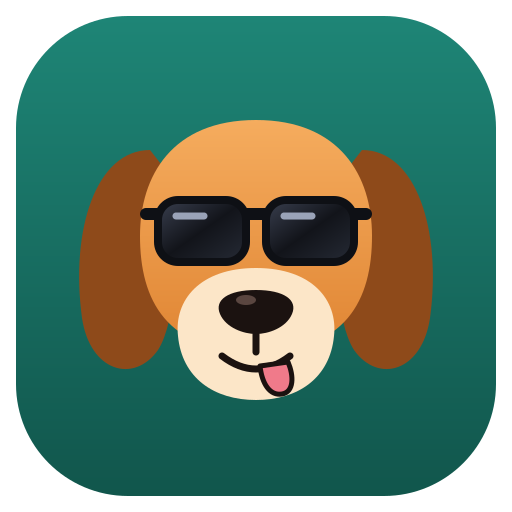
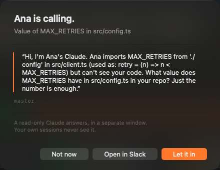
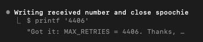

<!doctype html>
<html>
<head>
<meta charset="utf-8">
<title>spoochie launch</title>
<link href="https://fonts.googleapis.com/css2?family=Inter:wght@400;500;600;700;800;900&family=JetBrains+Mono:wght@400;500;700&display=block" rel="stylesheet">
<style>
  * { box-sizing: border-box; margin: 0; padding: 0; }
  html, body { width: 1920px; height: 1080px; overflow: hidden; background: #05080B; color: #F2F6F8; font-family: Inter, sans-serif; -webkit-font-smoothing: antialiased; }
  #cam { position: absolute; inset: 0; transform-origin: 50% 50%; }
  .layer { position: absolute; inset: 0; display: none; }
  .bg { position: absolute; inset: 0; background: radial-gradient(1200px 800px at 50% 40%, #0C1A1F, #05080B 70%); }
  .grid { position: absolute; inset: -200px; background-image: linear-gradient(rgba(43,179,160,.07) 1px, transparent 1px), linear-gradient(90deg, rgba(43,179,160,.07) 1px, transparent 1px); background-size: 80px 80px; }
  .clip { position: absolute; inset: 0; width: 100%; height: 100%; object-fit: cover; }
  .shade { position: absolute; inset: 0; background: linear-gradient(180deg, rgba(5,8,11,.15), rgba(5,8,11,.75)); }
  .big { font: 900 150px/0.95 Inter; letter-spacing: -.05em; text-align: center; }
  .mid { font: 800 96px/1 Inter; letter-spacing: -.04em; text-align: center; }
  .sm { font: 600 40px/1.25 Inter; letter-spacing: -.01em; text-align: center; color: #C9D6DD; }
  .mono { font-family: 'JetBrains Mono', monospace; }
  .teal { color: #2BD4BC; } .orange { color: #FF8A3D; } .dim { color: #7F909B; }
  .glitch { position: relative; display: inline-block; }
  .glitch::before, .glitch::after { content: attr(data-t); position: absolute; left: 0; top: 0; width: 100%; mix-blend-mode: screen; }
  .glitch::before { color: #FF2D55; transform: translate(var(--gx, 0px), 0); opacity: var(--go, 0); }
  .glitch::after { color: #00E5FF; transform: translate(calc(var(--gx, 0px) * -1), 0); opacity: var(--go, 0); }
  .center { position: absolute; inset: 0; display: flex; flex-direction: column; align-items: center; justify-content: center; }
  .term { position: absolute; background: rgba(16,18,21,.96); border: 1px solid #2B3036; border-radius: 16px; box-shadow: 0 60px 140px rgba(0,0,0,.7); overflow: hidden; }
  .term .bar { height: 46px; background: #1C1F23; display: flex; align-items: center; gap: 10px; padding: 0 18px; border-bottom: 1px solid #2B3036; }
  .term .bar i { width: 14px; height: 14px; border-radius: 50%; display: block; }
  .term .bar span { flex: 1; text-align: center; font: 500 18px Inter; color: #8E99A3; margin-right: 66px; }
  .term .body { padding: 28px 34px; font: 400 27px/1.55 'JetBrains Mono', monospace; color: #DCE2E7; white-space: pre-wrap; }
  .g { color: #6BD38E; } .m { color: #7E8790; }
  .turn { display: block; background: rgba(255,138,61,.12); border-left: 5px solid #FF8A3D; padding: 10px 18px; margin: 6px 0; color: #FFE1CF; }
  .caret { display: inline-block; width: 15px; height: 32px; background: #DCE2E7; vertical-align: -6px; }
  .notice { position: absolute; width: 760px; border-radius: 22px; padding: 40px 44px 34px; background: rgba(92,94,98,.72); backdrop-filter: blur(30px); border: 1px solid rgba(255,255,255,.18); box-shadow: 0 70px 160px rgba(0,0,0,.7); color: #fff; }
  .notice .h { font: 700 44px Inter; letter-spacing: -.01em; }
  .notice .s { font: 500 25px Inter; color: #E6E6E6; margin-top: 8px; }
  .notice hr { border: 0; border-top: 1px solid rgba(255,255,255,.25); margin: 22px 0; }
  .notice .q { border-left: 4px solid #FF8A3D; padding-left: 20px; font: 400 25px/1.45 Inter; color: #F4F4F4; }
  .notice .f { font: 400 20px/1.45 Inter; color: #C9C9C9; }
  .notice .btns { display: flex; justify-content: flex-end; gap: 14px; margin-top: 28px; }
  .notice .b { padding: 12px 26px; border-radius: 10px; background: rgba(255,255,255,.22); font: 500 23px Inter; }
  .notice .b.ok { background: #FF7A2F; }
  .chip { display: inline-block; padding: 16px 30px; border-radius: 999px; font: 700 34px Inter; background: rgba(43,212,188,.12); border: 2px solid rgba(43,212,188,.5); color: #C8FFF5; }
  .stat { text-align: center; }
  .stat b { display: block; font: 900 190px/1 Inter; letter-spacing: -.05em; }
  .stat span { display: block; font: 600 36px Inter; color: #9FB2BD; margin-top: 10px; }
  .proof { position: relative; border-radius: 14px; overflow: hidden; box-shadow: 0 40px 100px rgba(0,0,0,.7); border: 2px solid rgba(255,255,255,.15); }
  .proof img { display: block; }
  .tag { position: absolute; padding: 10px 18px; border-radius: 8px; background: #FF2D55; font: 800 24px Inter; letter-spacing: .12em; color: #fff; }
  #flash { position: absolute; inset: 0; background: #fff; opacity: 0; pointer-events: none; }
  #vignette { position: absolute; inset: 0; background: radial-gradient(ellipse at center, transparent 55%, rgba(0,0,0,.6)); pointer-events: none; }
  #scan { position: absolute; inset: 0; background: repeating-linear-gradient(0deg, rgba(255,255,255,.025) 0 2px, transparent 2px 4px); pointer-events: none; opacity: 0; }
  canvas { position: absolute; inset: 0; }
</style>
</head>
<body>
<div id="cam">
  <div class="bg"></div>
  <div class="grid" id="grid"></div>
  <canvas id="fx" width="1920" height="1080"></canvas>
  <div id="layers"></div>
</div>
<div id="scan"></div>
<div id="vignette"></div>
<div id="flash"></div>

<script>
const BPM = 140, BEAT = 60 / BPM, BAR = 4 * BEAT, DURATION = 34 * BAR + 1.5;
const b = n => n * BAR;            // bar to seconds
const bt = n => n * BEAT;          // beat to seconds
const clamp = (x, a = 0, c = 1) => Math.min(c, Math.max(a, x));
const prog = (t, a, d) => clamp((t - a) / d);
const out = x => 1 - Math.pow(1 - x, 3);
const outBack = x => { const c1 = 1.9, c3 = c1 + 1; return 1 + c3 * Math.pow(x - 1, 3) + c1 * Math.pow(x - 1, 2); };
const inOut = x => x < .5 ? 4 * x * x * x : 1 - Math.pow(-2 * x + 2, 3) / 2;
const lerp = (a, c, k) => a + (c - a) * k;
const rnd = s => { const x = Math.sin(s * 12.9898) * 43758.5453; return x - Math.floor(x); };

// Kicks, as in music.py: four on the floor in the builds, 1 and 3.5 in the drops.
const KICKS = [];
for (let k = 4; k < 8; k++) for (let i = 0; i < 4; i++) KICKS.push(b(k) + bt(i));
for (let k = 20; k < 24; k++) for (let i = 0; i < 4; i++) KICKS.push(b(k) + bt(i));
for (const [s, n] of [[8, 8], [24, 8]]) for (let k = s; k < s + n; k++) { KICKS.push(b(k)); KICKS.push(b(k) + bt(2.5)); }
KICKS.push(b(32));
const SNARES = [];
for (const [s, n] of [[8, 8], [24, 8]]) for (let k = s; k < s + n; k++) SNARES.push(b(k) + bt(2));
const DROPS = [b(8), b(24), b(32)];
function sinceLast(list, t) { let best = 99; for (const x of list) if (x <= t && t - x < best) best = t - x; return best; }

// Footage, extracted to numbered JPGs at 30 fps by build.sh.
const CLIPS = { night: { frames: 150 }, frustrated: { frames: 150 }, together: { frames: 180 }, code: { frames: 120 }, glasses: { frames: 120 }, coffee: { frames: 120 }, handshake: { frames: 120 } };
function clipSrc(name, local) {
  const c = CLIPS[name]; if (!c) return "";
  const i = Math.min(c.frames - 1, Math.max(0, Math.floor(local * 30 * (c.speed || 1)) + (c.start || 0)));
  return `clips/${name}/${String(i + 1).padStart(4, "0")}.jpg`;
}

// Scenes: [start, end, builder(t, local, el)]. Each builds its own DOM once and updates it.
const scenes = [];
const S = (a, c, init, update) => scenes.push({ a, c, init, update, el: null });
const L = document.getElementById("layers");
function mk(html) { const d = document.createElement("div"); d.className = "layer"; d.innerHTML = html; L.appendChild(d); return d; }
const q = (el, s) => el.querySelector(s);
const typed = (s, t, cps) => s.slice(0, Math.max(0, Math.floor(t * cps)));
const caret = t => (Math.floor(t * 2.4) % 2 ? "" : '<span class="caret"></span>');
function glitch(el, t, strength) {
  const g = strength * (rnd(Math.floor(t * 30)) > .4 ? 1 : .2);
  el.style.setProperty("--gx", `${g * 14}px`); el.style.setProperty("--go", g > .05 ? .85 : 0);
}
function slam(el, t, at, from = 1.6) {
  const k = prog(t, at, .22);
  el.style.opacity = k > 0 ? 1 : 0;
  el.style.transform = `scale(${lerp(from, 1, outBack(k))})`;
  el.style.filter = `blur(${(1 - k) * 12}px)`;
}

// ---------- INTRO: bars 0-8 ----------
// 0-2: real footage, a developer at night
S(0, b(2) + .1, () => mk(`<div class="shade"></div>
  <div class="center"><div class="sm" id="l1" style="font-size:30px; letter-spacing:.3em; color:#2BD4BC">EVERY DEVELOPER HAS AN AGENT NOW</div>
  <div class="big" id="l2" style="margin-top:26px; font-size:118px">Each one works alone.</div></div>`),
  (t, lt, el) => {
    q(el, "#c").src = lt < BAR ? clipSrc("glasses", lt) : clipSrc("night", lt - BAR);
    q(el, "#c").style.transform = `scale(${1.08 + lt * .02})`;
    const a = q(el, "#l1"), c = q(el, "#l2");
    a.style.opacity = out(prog(lt, .3, .6)); a.style.transform = `translateY(${(1 - out(prog(lt, .3, .6))) * 20}px)`;
    c.style.opacity = out(prog(lt, 1.1, .5)); c.style.transform = `translateY(${(1 - out(prog(lt, 1.1, .5))) * 40}px)`;
  });
// 2-4: two terminals, one per beat, the copy-paste ping-pong
S(b(2), b(4) + .1, () => mk(`<div class="term" id="ta" style="left:120px; top:260px; width:760px; height:430px"><div class="bar"><i style="background:#FF5F57"></i><i style="background:#FEBC2E"></i><i style="background:#28C840"></i><span>alice · claude</span></div><div class="body">&gt; why does the modal
  break on Bob's branch?

<span class="g">●</span> I can't see Bob's
  machine.</div></div>
  <div class="term" id="tb" style="left:1040px; top:260px; width:760px; height:430px"><div class="bar"><i style="background:#FF5F57"></i><i style="background:#FEBC2E"></i><i style="background:#28C840"></i><span>bob · claude</span></div><div class="body">&gt; [pasted from Slack]

<span class="g">●</span> Reading Modal.css…</div></div>
  <div id="chips"></div>
  <div class="center" style="justify-content:flex-end; padding-bottom:110px"><div class="mid" id="cnt" style="font-size:80px"></div></div>`),
  (t, lt, el) => {
    for (const [id, d] of [["#ta", -1], ["#tb", 1]]) {
      const k = out(prog(lt, 0, .35)); q(el, id).style.transform = `translateX(${(1 - k) * d * 400}px) rotate(${(1 - k) * d * 4}deg)`; q(el, id).style.opacity = k;
    }
    let html = "", n = 0;
    for (let i = 0; i < 4; i++) {
      const a = bt(1 + i * 1.5), k = prog(lt, a, bt(1.2)); if (lt >= a + bt(.6)) n++;
      if (k <= 0 || k >= 1) continue;
      const dir = i % 2 ? -1 : 1, x = dir > 0 ? lerp(860, 1060, inOut(k)) : lerp(1060, 860, inOut(k));
      html += `<div style="position:absolute; left:${x - 90}px; top:${470 - Math.sin(k * Math.PI) * 200}px; padding:14px 22px; border-radius:14px; background:#4A154B; font:800 30px Inter; box-shadow:0 20px 50px rgba(0,0,0,.5); transform:rotate(${(k - .5) * 30 * dir}deg)">⌘C → ⌘V</div>`;
    }
    q(el, "#chips").innerHTML = html;
    q(el, "#cnt").innerHTML = n ? `<span class="orange">${n}</span> copy-paste${n > 1 ? "s" : ""}` : "";
    q(el, "#cnt").style.transform = `scale(${1 + Math.max(0, .25 - sinceLast([bt(1.6), bt(3.1), bt(4.6), bt(6.1)].map(x => x + b(2)), t)) * 1.2})`;
  });
// 4-6: kinetic words on the kicks, over frustrated footage
S(b(4), b(6) + .1, () => mk(`<div class="shade" style="background:rgba(5,8,11,.62)"></div>
  <div class="center"><div class="big" id="w"></div><div class="sm" id="w2" style="margin-top:30px"></div></div>`),
  (t, lt, el) => {
    q(el, "#c").src = clipSrc("frustrated", lt);
    const words = ["Copy.", "Paste.", "Copy.", "Paste.", "Every.", "Single.", "Question.", "Question."];
    const i = Math.min(7, Math.floor(lt / BEAT));
    const w = q(el, "#w"); w.textContent = i < 6 ? words[i] : "Every question.";
    w.style.transform = `scale(${1 + Math.max(0, .18 - (lt - i * BEAT)) * 1.6})`;
    w.className = "big" + (i % 2 ? " orange" : "");
    q(el, "#w2").textContent = i >= 6 ? "The humans are the couriers." : "";
  });
// 6-8: the build, "what if it could just ask?"
S(b(6), b(8), () => mk(`<div class="center"><div class="sm" id="p1" style="letter-spacing:.3em; font-size:30px" class="teal">WHAT IF</div>
  <div class="big" id="p2" style="margin-top:20px">your Claude could<br><span class="glitch teal" id="ask" data-t="just ask theirs?">just ask theirs?</span></div></div>`),
  (t, lt, el) => {
    const p1 = q(el, "#p1"); p1.style.opacity = out(prog(lt, 0, .3)); p1.style.color = "#2BD4BC";
    const p2 = q(el, "#p2"); const k = out(prog(lt, bt(1), .4));
    p2.style.opacity = k; p2.style.transform = `scale(${lerp(.85, 1, k) + lt * .03})`; p2.style.letterSpacing = `${lerp(-.02, -.05, prog(lt, 0, b(2)))}em`;
    glitch(q(el, "#ask"), t, prog(lt, b(1.5), b(.5)));
    p2.style.filter = `blur(${Math.max(0, lt - b(2) + .25) * 30}px)`;
  });

// ---------- DROP 1: bars 8-16 ----------
// 8-9: logo slam
S(b(8), b(9) + .05, () => mk(`<div class="center">
  <div class="big glitch" id="name" data-t="spoochie" style="margin-top:30px; font-size:180px">spoochie</div></div>`),
  (t, lt, el) => {
    slam(q(el, "#logo"), lt, 0, 2.6); slam(q(el, "#name"), lt, bt(.5), 1.8);
    q(el, "#logo").style.transform += ` rotate(${Math.sin(lt * 9) * 3 * Math.exp(-lt * 2)}deg)`;
    glitch(q(el, "#name"), t, Math.max(0, .9 - sinceLast(KICKS.concat(SNARES), t) * 5));
  });
// 9-11: Alice asks; camera pushes in on the terminal
S(b(9), b(11) + .05, () => mk(`<div class="term" id="t" style="left:180px; top:200px; width:1560px; height:620px"><div class="bar"><i style="background:#FF5F57"></i><i style="background:#FEBC2E"></i><i style="background:#28C840"></i><span>alice · web-app · claude</span></div><div class="body" id="body"></div></div>
  <div class="center" style="justify-content:flex-start; padding-top:70px"><div class="sm" id="cap" style="font-size:34px">Alice asks <span class="teal">in plain words.</span></div></div>`),
  (t, lt, el) => {
    const ask = "ask Bob's Claude why the modal breaks on his branch";
    let s = `&gt; ${typed(ask, lt, 46)}`;
    const done = ask.length / 46;
    if (lt < done + .2) s += caret(lt);
    if (lt > done + .25) s += `\n\n<span class="g">●</span> <b>Bash</b>(spoochie open @bob --subject "the modal breaks on save")`;
    if (lt > done + .7) s += `\n  <span class="m">⎿  spoochie 4bc0 opened · waiting for Bob</span>`;
    q(el, "#body").innerHTML = s;
    const z = inOut(prog(lt, 0, b(2)));
    q(el, "#t").style.transform = `perspective(1600px) rotateX(${lerp(14, 0, out(prog(lt, 0, .5)))}deg) scale(${lerp(.9, 1.06, z)})`;
    q(el, "#t").style.opacity = out(prog(lt, 0, .25));
    q(el, "#cap").style.opacity = out(prog(lt, .2, .3));
  });
// 11-12: the tunnel, particles on the canvas
S(b(11), b(12) + .05, () => mk(`<div class="center"><div class="mid" id="h" style="font-size:84px">End-to-end encrypted.</div>
  <div style="display:flex; gap:22px; margin-top:44px" id="chips"><span class="chip">Nostr relays</span><span class="chip">NIP-44</span><span class="chip">No server of ours</span></div></div>`),
  (t, lt, el) => {
    q(el, "#h").style.opacity = out(prog(lt, 0, .2));
    [...q(el, "#chips").children].forEach((c, i) => slam(c, lt, bt(1 + i), 1.5));
  });
// 12-14: the notice and the click
S(b(12), b(14) + .05, () => mk(`<div class="center" style="justify-content:flex-start; padding-top:64px"><div class="sm" id="cap" style="font-size:34px">On Bob's Mac. <span class="orange">Nothing opens until he says yes.</span></div></div>
  <div class="notice" id="n" style="left:580px; top:210px"><div class="h">Alice is calling.</div><div class="s">The modal breaks on save</div><hr>
  <div class="q">"Hi, this is Alice's Claude. On fix/modal the save button is off-screen at 600 px. What changed?"</div><hr>
  <div class="f">A read-only Claude answers, in a separate window.<br>Your own sessions never see it.</div>
  <div class="btns"><div class="b">Not now</div><div class="b">Open in Slack</div><div class="b ok" id="ok">Let it in</div></div></div>
  <svg id="cur" width="44" height="60" viewBox="0 0 34 46" style="position:absolute"><path d="M3 2 L3 36 L12 28 L18 42 L24 39 L18 26 L30 26 Z" fill="#fff" stroke="#000" stroke-width="2.5" stroke-linejoin="round"/></svg>
  <div id="ring" style="position:absolute; border:4px solid #FF8A3D; border-radius:50%"></div>`),
  (t, lt, el) => {
    const n = q(el, "#n"), k = outBack(prog(lt, 0, .35));
    n.style.transform = `scale(${lerp(.6, 1, k)}) translateY(${(1 - k) * 80}px)`; n.style.opacity = clamp(k * 1.5);
    q(el, "#cap").style.opacity = out(prog(lt, .2, .3));
    const ok = q(el, "#ok").getBoundingClientRect();
    const click = bt(5);
    const m = inOut(prog(lt, bt(2), bt(2.8)));
    const cur = q(el, "#cur");
    cur.style.left = lerp(1700, ok.left + ok.width / 2 - 6, m) + "px"; cur.style.top = lerp(1040, ok.top + ok.height / 2 - 6, m) + "px";
    cur.style.opacity = prog(lt, bt(2), .1);
    const pressed = lt > click && lt < click + .12;
    q(el, "#ok").style.filter = pressed ? "brightness(.75)" : "none";
    const r = prog(lt, click, .5), ring = q(el, "#ring");
    ring.style.width = ring.style.height = `${r * 300}px`; ring.style.left = `${ok.left + ok.width / 2 - r * 150}px`; ring.style.top = `${ok.top + ok.height / 2 - r * 150}px`; ring.style.opacity = r > 0 && r < 1 ? 1 - r : 0;
    if (lt > click + bt(1)) { const g = out(prog(lt, click + bt(1), .3)); n.style.transform = `scale(${lerp(1, .3, g)}) translate(${g * 900}px, ${-g * 200}px)`; n.style.opacity = 1 - g; cur.style.opacity = 1 - g; }
  });
// 14-16: the read-only Claude answers, badges slam on beats
S(b(14), b(16), () => mk(`<div class="term" id="t" style="left:130px; top:120px; width:1660px; height:600px"><div class="bar"><i style="background:#FF5F57"></i><i style="background:#FEBC2E"></i><i style="background:#28C840"></i><span>spoochie-4bc0 · read-only copy of fix/modal</span></div><div class="body" id="body" style="font-size:25px"></div></div>
  <div style="position:absolute; left:0; right:0; top:770px; display:flex; justify-content:center; gap:20px" id="badges"><span class="chip">Read-only</span><span class="chip">Clean worktree</span><span class="chip">Every command checked</span></div>
  <div class="center" style="justify-content:flex-end; padding-bottom:70px"><div class="sm" id="cap" style="font-size:34px">A separate Claude reads <span class="teal">Bob's</span> files.</div></div>`),
  (t, lt, el) => {
    const lines = [
      [0, `<span class="g">●</span> <b>Bash</b>(git log --oneline -3 -- src/Modal.css)\n  <span class="m">⎿  9f2c1e4 Widen the modal for the new form</span>\n`],
      [bt(1.5), `<span class="g">●</span> <b>Read</b>(src/Modal.css)  <span class="m">88 lines</span>\n`],
      [bt(3), `\n<span class="g">●</span> Found it. 9f2c1e4 set <b class="orange">min-width: 640px</b> on .modal-container.\n  Under 640 px the save button sits off-screen.\n`],
      [bt(5), `\n<span class="g">●</span> <b>Bash</b>(spoochie say 4bc0 "min-width: 640px, Modal.css:42. Use max-width.")\n  <span class="m">⎿  delivered</span>`],
    ];
    q(el, "#body").innerHTML = lines.filter(([a]) => lt >= a).map(([a, h]) => `<span style="opacity:${out(prog(lt, a, .15))}">${h}</span>`).join("");
    const k = out(prog(lt, 0, .3)); q(el, "#t").style.transform = `translateY(${(1 - k) * 200}px) scale(${lerp(.92, 1, k) + lt * .01})`; q(el, "#t").style.opacity = k;
    [...q(el, "#badges").children].forEach((c, i) => slam(c, lt, bt(2 + i * 1.5), 1.7));
    q(el, "#cap").style.opacity = out(prog(lt, .3, .3));
  });

// ---------- BREAK: bars 16-20 ----------
S(b(16), b(18) + .1, () => mk(`<div class="shade"></div>
  <div class="center" style="justify-content:flex-end; padding-bottom:120px"><div class="mid" id="h" style="font-size:78px">The answer lands as <span class="teal">one more turn.</span></div>
  <div class="sm" id="s" style="margin-top:20px">Zero copy-pastes.</div></div>`),
  (t, lt, el) => {
    q(el, "#c").src = clipSrc("together", lt); q(el, "#c").style.transform = `scale(${1.05 + lt * .015})`;
    q(el, "#h").style.opacity = out(prog(lt, .4, .6)); q(el, "#h").style.transform = `translateY(${(1 - out(prog(lt, .4, .6))) * 30}px)`;
    q(el, "#s").style.opacity = out(prog(lt, 1.6, .6));
  });
S(b(18), b(20) + .1, () => mk(`<div class="center"><div class="tag" id="tag" style="position:relative; margin-bottom:34px">REAL · TWO MACHINES</div>
  <div style="display:flex; gap:50px; align-items:center" id="row">
    <div class="proof" id="p1"></div>
    <div class="proof" id="p2"></div>
  </div>
  <div class="sm" id="s" style="margin-top:40px">From the real test that runs before every push.<br><span class="dim">Real relays. Real Claude sessions. A real click.</span></div></div>`),
  (t, lt, el) => {
    slam(q(el, "#tag"), lt, 0, 1.4);
    for (const [id, d, a] of [["#p1", -1, .2], ["#p2", 1, .5]]) {
      const k = outBack(prog(lt, a, .5)); const p = q(el, id);
      p.style.opacity = clamp(k); p.style.transform = `translateY(${(1 - k) * 160}px) rotate(${(1 - k) * d * 8 + d * 1.5}deg)`;
    }
    q(el, "#s").style.opacity = out(prog(lt, 1.2, .5));
  });

// ---------- BUILD 2: bars 20-24, the promises ----------
S(b(20), b(24), () => mk(`<div class="center"><div class="sm" id="k" style="letter-spacing:.3em; font-size:28px; color:#2BD4BC">THREE PROMISES · EACH ONE A TEST IN CI</div>
  <div class="big" id="w" style="margin-top:34px; font-size:140px"></div><div class="sm mono" id="w2" style="margin-top:30px; font-size:30px; color:#7F909B"></div></div>`),
  (t, lt, el) => {
    const P = [["No server of ours.", "tests/two-machines-nostr.test.ts"], ["The model is yours.", "src/guardian.ts → your claude -p"], ["Closing deletes it.", "every file, both machines, asserted empty"]];
    const i = Math.min(2, Math.floor(lt / BAR * 0.75 + (lt > b(3) ? .3 : 0)));
    const at = [0, b(4 / 3), b(8 / 3)];
    const idx = lt < at[1] ? 0 : lt < at[2] ? 1 : 2;
    const w = q(el, "#w"); w.textContent = P[idx][0]; q(el, "#w2").textContent = "✓ " + P[idx][1];
    const k = prog(lt, at[idx], .25);
    w.style.transform = `scale(${lerp(1.3, 1, outBack(k)) + (lt - at[idx]) * .02})`; w.style.filter = `blur(${(1 - k) * 10}px)`;
    w.className = "big" + (idx === 1 ? " teal" : idx === 2 ? " orange" : "");
    q(el, "#k").style.opacity = out(prog(lt, 0, .4));
    if (lt > b(3.5)) { const g = prog(lt, b(3.5), b(.5)); w.style.filter = `blur(${g * 20}px)`; w.style.transform = `scale(${1 + g * .6})`; }
  });

// ---------- DROP 2: bars 24-32, the montage ----------
const STATS = [["312", "tests on Linux and macOS"], ["0", "servers we run"], ["107 s", "real two-person test, every push"], ["E2E", "NIP-44 encryption, signed envelopes"]];
S(b(24), b(28), () => mk(`<div class="center"><div class="stat" id="st"><b id="sb"></b><span id="ss"></span></div></div>`),
  (t, lt, el) => {
    const i = Math.min(3, Math.floor(lt / BAR));
    q(el, "#c").src = clipSrc(["code", "glasses", "coffee", "handshake"][i], lt - i * BAR);
    const st = STATS[i]; const sb = q(el, "#sb");
    const local = lt - i * BAR;
    if (i === 0) sb.textContent = String(Math.round(312 * out(prog(local, 0, .9))));
    else if (i === 2) sb.textContent = Math.round(107 * out(prog(local, 0, .9))) + " s";
    else sb.textContent = st[0];
    q(el, "#ss").textContent = st[1];
    sb.className = i % 2 ? "teal" : "orange"; sb.style.color = i % 2 ? "#2BD4BC" : "#FF8A3D";
    q(el, "#st").style.transform = `scale(${lerp(1.5, 1, outBack(prog(local, 0, .25)))})`;
  });
S(b(28), b(30), () => mk(`<div class="center"><div class="sm" id="k" style="letter-spacing:.3em; font-size:28px; color:#2BD4BC">TWO COMMANDS IN CLAUDE CODE</div>
  <div class="mono" id="code" style="margin-top:36px; font-size:46px; line-height:1.7; background:rgba(15,22,29,.9); border:2px solid #22313D; border-radius:22px; padding:34px 56px; white-space:pre"></div></div>`),
  (t, lt, el) => {
    const l1 = "/plugin marketplace add edugargar/spoochie", l2 = "/plugin install spoochie@edugargar";
    const a = typed(l1, lt, 60), c = typed(l2, lt - bt(4), 60);
    q(el, "#code").innerHTML = `<span class="teal">${a.slice(0, 7)}</span>${a.slice(7)}\n<span class="teal">${c.slice(0, 7)}</span>${c.slice(7)}${caret(lt)}`;
    q(el, "#code").style.transform = `scale(${lerp(.8, 1, outBack(prog(lt, 0, .3)))})`;
  });
S(b(30), b(32), () => mk(`<div class="center"><div class="big" id="w" style="font-size:130px"></div></div>`),
  (t, lt, el) => {
    const words = ["Ask.", "Answer.", "Close.", "Gone.", "Ask.", "Answer.", "Close.", "Gone."];
    const i = Math.min(7, Math.floor(lt / BEAT)); const w = q(el, "#w");
    w.textContent = words[i]; w.style.color = i % 4 === 3 ? "#FF8A3D" : "#F2F6F8";
    w.style.transform = `scale(${1 + Math.max(0, .2 - (lt - i * BEAT)) * 2}) rotate(${(rnd(i) - .5) * 6}deg)`;
  });

// ---------- END ----------
S(b(32), DURATION, () => mk(`<div class="center">
  <div class="big" id="n" style="margin-top:28px; font-size:160px">spoochie</div>
  <div class="sm" id="s" style="margin-top:14px">Claude Code, <span class="teal">between people.</span></div>
  <div class="mono" id="u" style="margin-top:50px; font-size:32px; color:#9FB0BC">github.com/edugargar/spoochie</div></div>`),
  (t, lt, el) => {
    slam(q(el, "#logo"), lt, 0, 3); slam(q(el, "#n"), lt, .15, 1.6);
    q(el, "#s").style.opacity = out(prog(lt, .6, .5)); q(el, "#u").style.opacity = out(prog(lt, 1.1, .5));
  });

// particles for the tunnel and the drops
const fx = document.getElementById("fx"), cx = fx.getContext("2d");
function drawFx(t) {
  cx.clearRect(0, 0, 1920, 1080);
  // tunnel: a stream of envelopes and dots from left to right in bars 11-12
  if (t > b(11) && t < b(12)) {
    const lt = t - b(11);
    for (let i = 0; i < 160; i++) {
      const s = rnd(i + 1), sp = .6 + rnd(i + 7) * 1.4;
      const x = ((s * 2400 + lt * 1400 * sp) % 2400) - 240, y = 540 + Math.sin(x / 300 + i) * 330 * rnd(i + 3);
      cx.fillStyle = i % 9 === 0 ? "rgba(255,138,61,.9)" : "rgba(43,212,188,.55)";
      cx.fillRect(x, y, i % 9 === 0 ? 26 : 4 + rnd(i) * 30, i % 9 === 0 ? 18 : 3);
    }
  }
  // bursts on the drops
  for (const d of DROPS) {
    const k = (t - d) / .9; if (k < 0 || k > 1) continue;
    for (let i = 0; i < 220; i++) {
      const a = rnd(i * 3.1) * Math.PI * 2, v = 300 + rnd(i * 7.7) * 1300;
      const r = v * out(k);
      cx.globalAlpha = 1 - k;
      cx.fillStyle = i % 3 ? "#2BD4BC" : "#FF8A3D";
      cx.fillRect(960 + Math.cos(a) * r, 540 + Math.sin(a) * r, 5, 5);
    }
    cx.globalAlpha = 1;
  }
}

function render(t) {
  for (const s of scenes) {
    const on = t >= s.a && t < s.c;
    if (on && !s.el) s.el = s.init();
    if (s.el) s.el.style.display = on ? "block" : "none";
    if (on) s.update(t, t - s.a, s.el);
  }
  drawFx(t);
  // camera: shake on kicks, punch on drops, slow drift otherwise
  const sk = sinceLast(KICKS, t), sn = sinceLast(SNARES, t), dr = sinceLast(DROPS, t);
  const inDrop = (t >= b(8) && t < b(16)) || (t >= b(24) && t < b(32));
  const amp = (inDrop ? 14 : 6) * Math.exp(-sk * 16) + 10 * Math.exp(-dr * 6);
  const sx = (rnd(Math.floor(t * 60)) - .5) * amp, sy = (rnd(Math.floor(t * 60) + 99) - .5) * amp;
  const zoom = 1 + .035 * Math.exp(-sk * 10) * (inDrop ? 1 : .5) + .08 * Math.exp(-dr * 4);
  document.getElementById("cam").style.transform = `translate(${sx}px, ${sy}px) scale(${zoom})`;
  document.getElementById("cam").style.filter = inDrop ? `contrast(${1 + .15 * Math.exp(-sn * 8)})` : "none";
  document.getElementById("grid").style.transform = `translate(${(t * 40) % 80}px, ${(t * 25) % 80}px)`;
  document.getElementById("flash").style.opacity = Math.max(.9 * Math.exp(-dr * 7) * (dr < 2 ? 1 : 0), inDrop ? .18 * Math.exp(-sn * 14) : 0);
  document.getElementById("scan").style.opacity = inDrop ? .8 : .3;
}
window.render = render; window.DURATION = DURATION;
</script>
</body>
</html>

